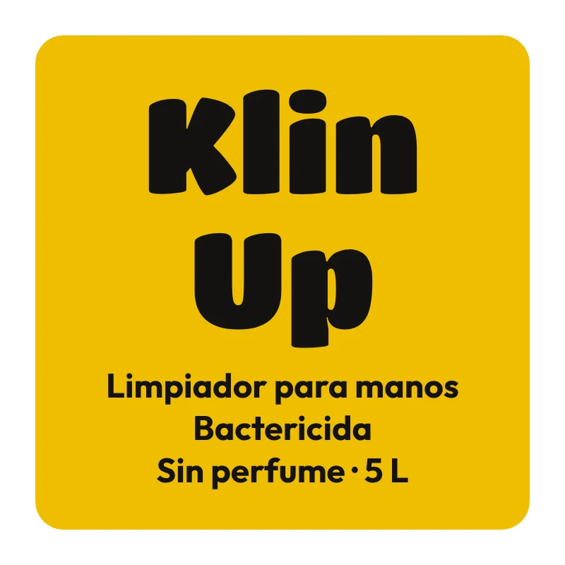

Limpiador para manos · 5 L
Klin Up
Limpiador para manos con acción bactericida, ideal para el lavado frecuente del personal de cocina.
- Acción bactericida
- Para uso en dispensadores recargables
- Sin perfume: pensado para áreas de alimentos
- Enjuagable